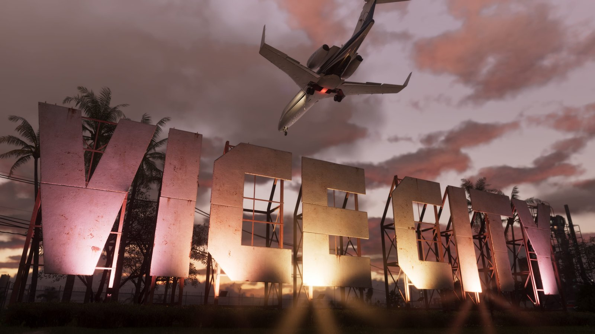
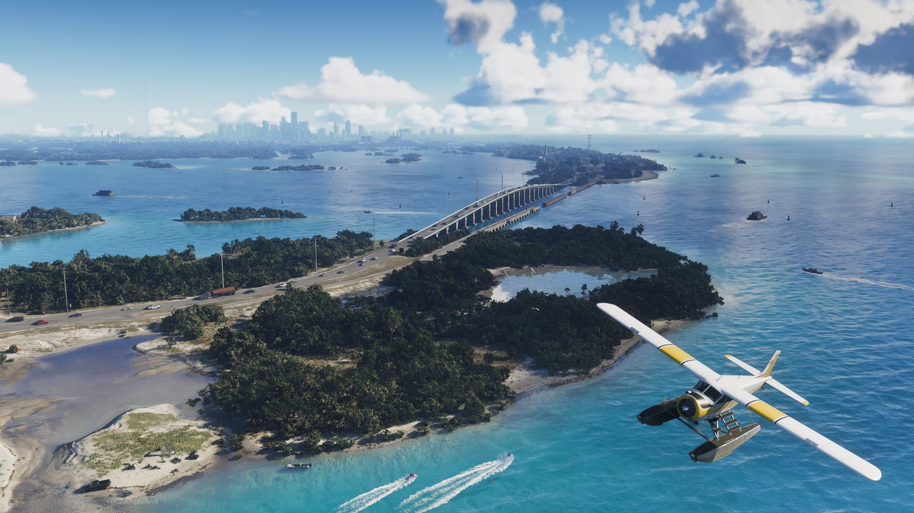
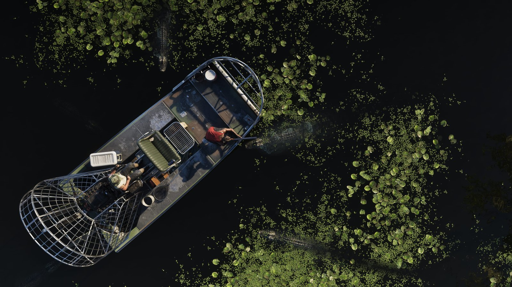
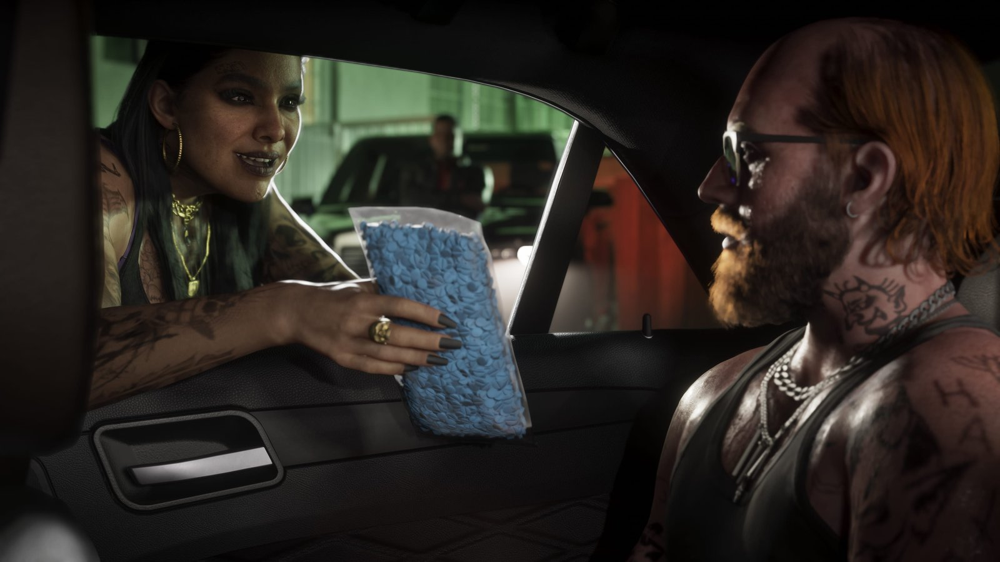
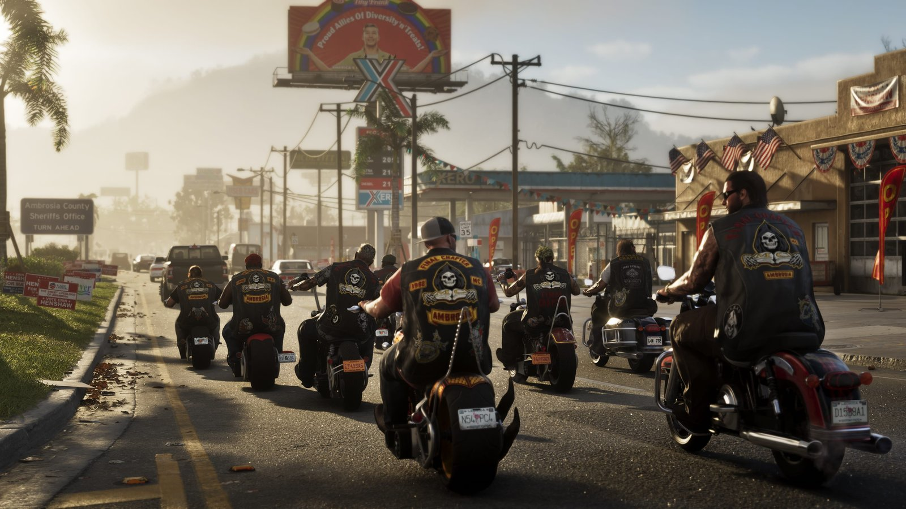
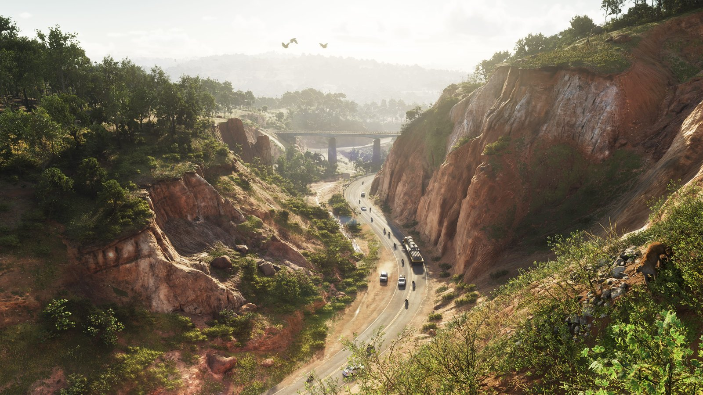

Leonida guide: the state of GTA 6
Updated October 31, 2026
GTA 6 is not just set in Vice City. It is set in Leonida, a fictional US state based on Florida, and Vice City is its biggest city rather than its whole world. That is the single biggest change from the 2002 game that made the name famous, and it shapes everything about how GTA 6 will play: this is a road-trip game as much as a city game, built around moving between very different places.
This guide walks through every region Rockstar has officially shown, what the trailers actually reveal about each one, and what each region seems to be for. Where this page moves from confirmed material into interpretation or fan speculation, it says so. Rockstar says Leonida is about twice the size of GTA 5's map; the size debate, including the fan estimates, lives on our map size page.
Vice City

Official The capital of the fantasy. Vice City is Rockstar's take on Miami: neon-lit streets, beaches, art-deco colour, a working port and a nightlife economy that runs the place. It is the region shown most heavily across all four trailers, and it is where the city's particular blend of glamour and crime will be densest — the high-end streets and the people who want what they cannot afford are the engine of the series' satire, and Lucia and Jason's story is plainly plugged into it.
Practically, expect Vice City to be the map's hub: the most missions, the most businesses, the most traffic and the most reasons to return. Returning players should resist mapping it one-to-one onto the 2002 original. The trailers show a modern city of social media and viral chaos, not a period piece, and the geography has been rebuilt at a completely different scale. Treat familiar names and vibes as Easter eggs, not as a layout you already know.
Leonida Keys

Official A chain of islands running south from the mainland, modelled on the Florida Keys and joined by long causeways over open water. The Keys are Jason's home ground: this is where he lives, where Brian Heder runs his operation, and where the story's quieter, scruffier side lives — boat yards, small settlements and work that stays off the city's radar.
The Keys change how the map feels more than any other region. In GTA 5, water was mostly an edge. Here it is a road: boats are transport, not decoration, and the long bridges over the sea will be some of the game's signature drives. If you tour one region slowly on your first day, make it this one.
Grassrivers

Official Leonida's wetlands, inspired by the Everglades: swamps, waterways, airboats and wildlife in every direction, including alligators. Grassrivers is the anti-Vice City — no neon, no crowds, just water, reeds and the sense that the state was swamp long before it was anything else.
Regions like this are where open-world games hide their strangest encounters, and the trailers lean into Grassrivers' atmosphere hard: mist, wildlife, and people who live by different rules. It is also the region most likely to punish careless driving. Whatever vehicle you take in, the swamp decides whether it comes out.
Port Gellhorn

Official A coastal town that has seen better days. Port Gellhorn appears in official material as a faded resort strip — the kind of place GTA loves, where the postcards are thirty years old and the locals have adapted to decline in ways that range from enterprising to dangerous.
Towns like this usually matter out of proportion to their size: they concentrate characters, cheap property and the kind of small-time crime that starts stories. It is reasonable to expect Port Gellhorn to be an early-game anchor Speculation — Rockstar has not said where the story begins — but even if it is not, it is clearly built as a place with a personality, not filler coastline.
Ambrosia

Official The working interior. Ambrosia is farming and industrial country built around a large sugar refinery, the economic heart of Leonida's middle. If Vice City is where the money gets spent, Ambrosia is where some of it gets made — fields, freight, factories and the small towns that serve them.
Ambrosia matters because it answers the "what's between the cities" question with something specific rather than empty countryside. It also gives the map an inland identity that GTA 5's desert never quite had: this is inhabited, working land, with its own look — red dirt, cane fields, industrial plant — distinct from both coast and swamp.
Mount Kalaga National Park

Official The wild north: a national park of forests, trails and high ground, presented in official material as the place for outdoor activities. Every GTA map has its wilderness, but a named national park signals intent — this region is meant to be visited, hiked and hunted in, not just flown over.
Mount Kalaga is also the map's exhale. After hours in Vice City traffic, a region built around trails and views is the palate cleanser, and the locations tracker will count it as its own destination. What activities exactly Rockstar has built there is, for now, one of the game's pleasant unknowns.
Confirmed vs rumoured
- Confirmed
- The six regions above, shown in trailers and named in Rockstar's official material, within the state of Leonida. Rockstar describes the world as about twice GTA 5's size.
- Confirmed
- Vice City is a city within Leonida, not the whole map. Jason is based in the Leonida Keys; the story moves Lucia and Jason across the state.
- Rumoured
- Additional major cities beyond Vice City, enterable interiors at any specific scale, and exact region boundaries. Fan mapping projects have proposed all of these from trailer analysis; none is confirmed.
- Rumoured
- Whether any region is locked at the start of the game. Rockstar has not described map progression either way.
Our rule, as everywhere on ViceHub: plan around the confirmed list, enjoy the rumours as rumours. When the game launches on November 19, this guide becomes a field guide — we will expand every region with what is actually there, and the locations tracker opens up alongside it.